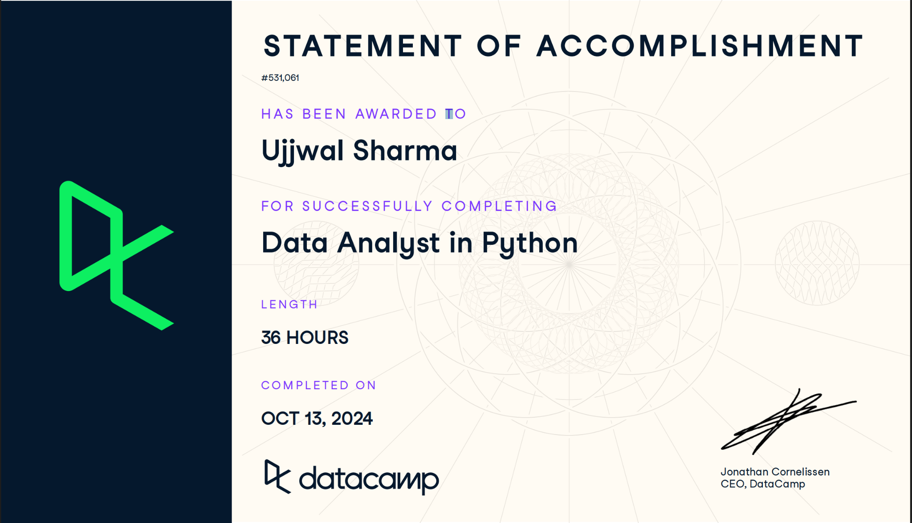

Technical Skills
Python
Pandas, NumPy, Scikit-learn, Statistical Modeling
SQL
PostgreSQL, SQL, DBMS, Data Warehouse
R Script
EDA, Regression, Hypothesis Testing
Business Analytics | Data Analytics | Data Science | Machine Learning
📄 Download ResumeI am a graduate student in the M.S. Business Analytics program at California State University, Sacramento, with a passion for data-driven decision-making, process improvement, and strategic communication. As the current President of the MSBA Association (MSBAA), I lead student engagement efforts and foster connections between academia and industry through events, mentorship, and collaboration. Professionally, I serve as a Graduate Intern at Sacramento State and have previously worked as a Program Analyst and Program Coordinator. My experience includes building interactive dashboards, conducting advanced data analysis, and developing machine learning models to uncover trends and support business outcomes. I’m proficient in tools and languages including SQL, Tableau, Power BI, Python, and Excel, and I thrive in environments where analytical thinking meets real-world application. I’m driven by the challenge of turning complex data into clear, actionable insights. With a background that blends technical skills and leadership, I aim to support organizations in making smarter, evidence-based decisions that create long-term value.
Coordinated regulatory compliance efforts with FCC, ISED, MIC, RED, and UKCA. Conducted detailed project analysis to boost efficiency by 15% and produced monthly reports to improve departmental transparency. Delivered engineer training on updated standards, achieving a 90% improvement in client compliance.
Trained and supervised survey interviewers on CATI software, survey techniques, and quality standards. Conducted interviews and managed data collection quality control in a professional research setting.
Facilitated multi-department coordination through Scrum methodology and Gantt charts. Designed a shared Excel template for customer data tracking and created tutorial content to support users.
Manage the MSBAA Events Committee, delegating tasks and mentoring students to plan, coordinate, and execute analytics-focused events. Support a collaborative culture through inclusive leadership, peer mentorship, and regular cross-functional check-ins. Serve as the primary point of contact for MSBAA to external stakeholders, including alumni, speakers, and university leadership
Manage the MSBAA Events Committee, delegating tasks and mentoring students to plan, coordinate, and execute analytics-focused events. Support a collaborative culture through inclusive leadership, peer mentorship, and regular cross-functional check-ins. Serve as the primary point of contact for MSBAA to external stakeholders, including alumni, speakers, and university leadership
Pandas, NumPy, Scikit-learn, Statistical Modeling
PostgreSQL, SQL, DBMS, Data Warehouse
EDA, Regression, Hypothesis Testing
April 2025 – May 2025
Designed and implemented both an operational OLTP database and a star-schema analytical data warehouse for residential property management. Developed SQL-based ETL pipelines to incrementally load and transform leases, maintenance requests, inspections, staff assignments, and client data, with Type 2 slowly changing dimensions for full historical tracking. Built data-quality checks and pre-built analytical views (occupancy, maintenance turnaround, revenue trends), then created a BI report to visualize key operational and financial metrics.
June 2025 – June 2025
Built an end-to-end ML pipeline in Python: handled skew (Yeo–Johnson), scaled & reduced dimensions (PCA), and compared 3 classifiers ( SVM, RandomForest, Logistic Regression). I also utilized joblib to export the models. Ran 5-fold CV: – Logistic Regression: 86.0% – Random Forest (100 trees): 91.5% – SVM (RBF kernel): 91.5%
EDA, hypothesis testing, sampling using pandas, seaborn, matplotlib, numpy, scipy.stats.
